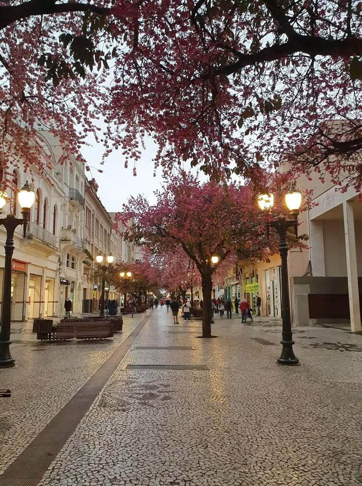
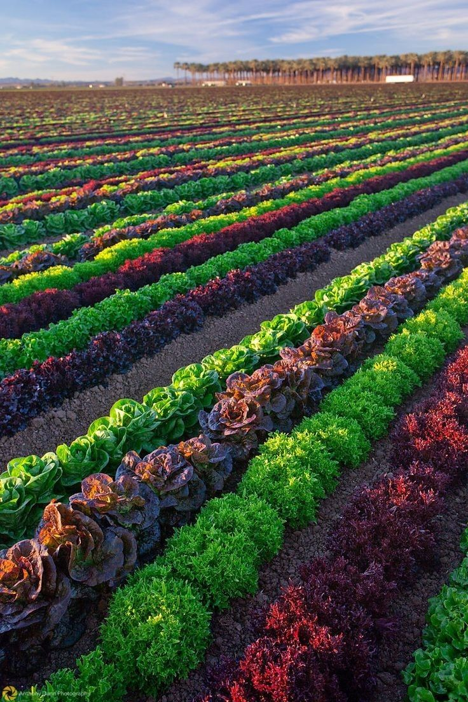
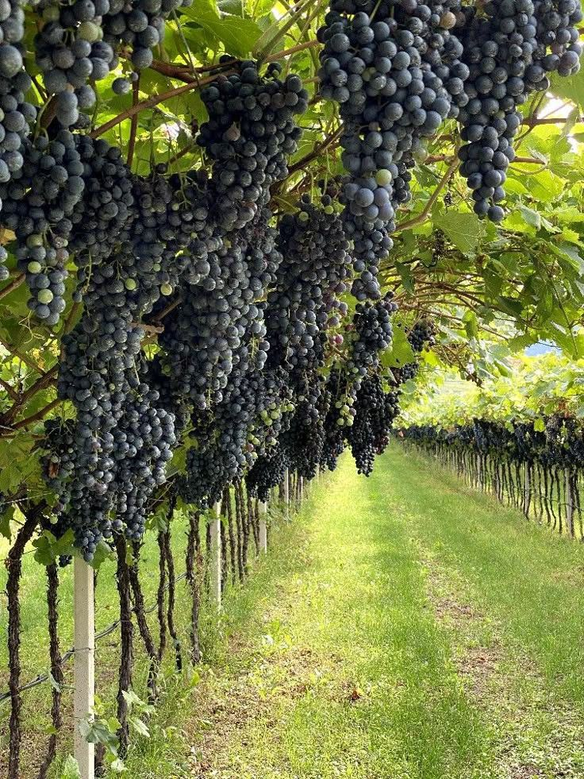
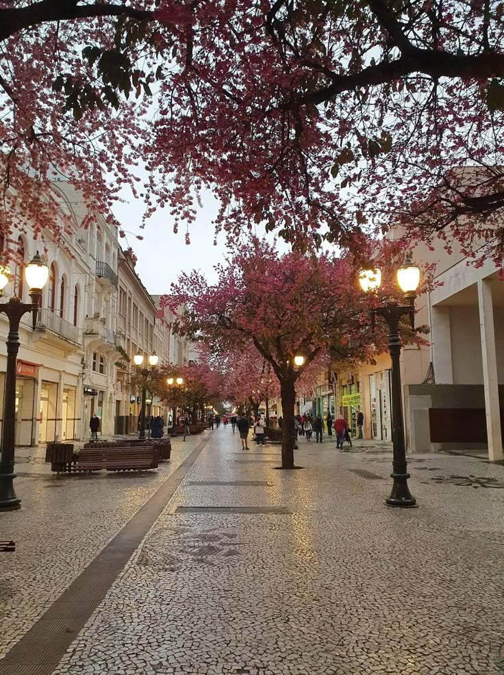
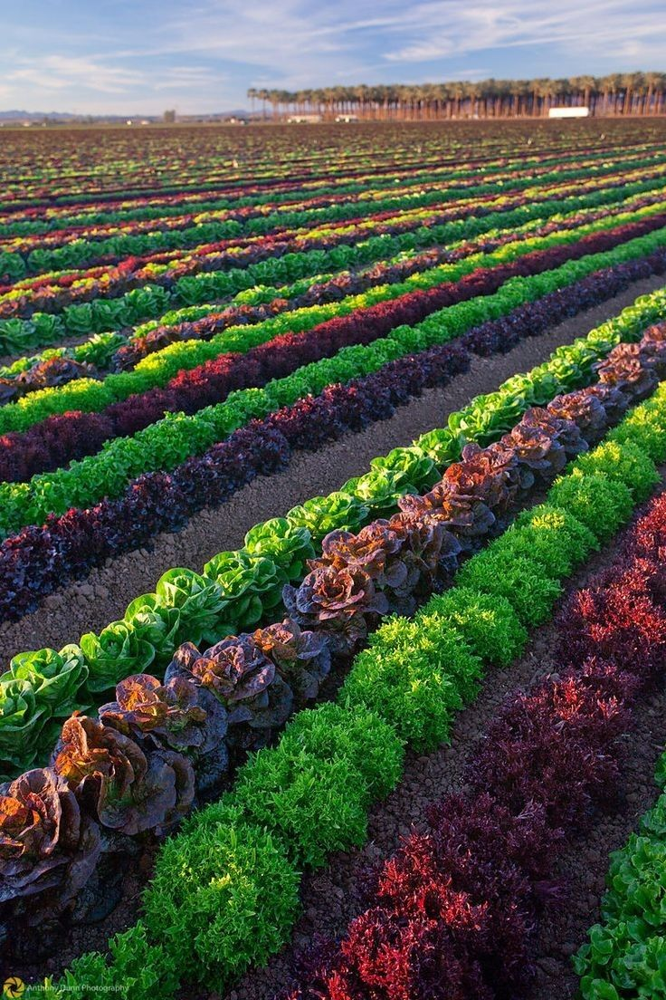
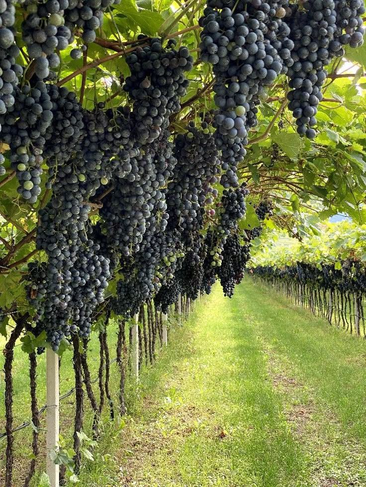
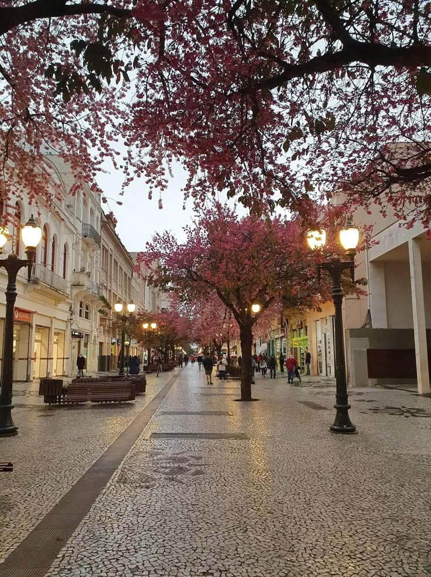
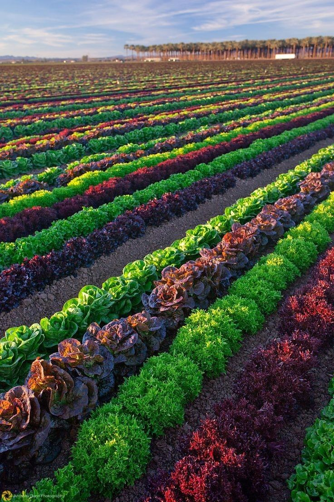
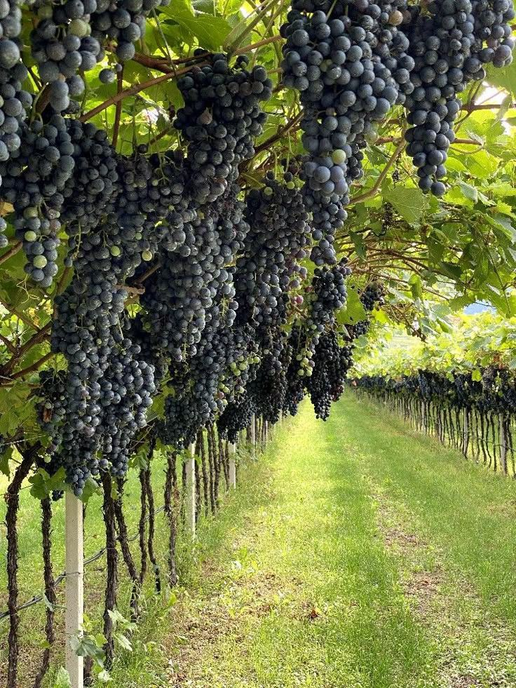

📸 Galeria

 





Festejando a conexão entre o campo e a cidade
O Projeto Agrinho é uma iniciativa educacional que tem como objetivo principal promover a reflexão sobre temas importantes para a sociedade, como meio ambiente, cidadania, saúde, ética, e, neste ano, a valorização do campo e da cidade. Com o tema “Festejando a Conexão entre o Campo e a Cidade”, o projeto convida alunos e professores a explorarem como esses dois mundos, muitas vezes vistos como opostos, se complementam e dependem um do outro. A cidade precisa do campo para obter alimentos, recursos naturais e qualidade de vida. O campo, por sua vez, também se beneficia da tecnologia, educação e infraestrutura urbana. Essa troca constante mostra que a harmonia entre os dois espaços é essencial para um futuro mais sustentável e justo para todos. Neste site, você encontrará informações, curiosidades, imagens e conteúdos interativos que celebram essa conexão poderosa e indispensável. Vamos juntos aprender, compartilhar e valorizar tudo o que une o campo e a cidade!



Desenvolvido pela minha equipe de Robótica da sala, este projeto busca replicar as condições ideais do campo para o cultivo de morangos na cidade. Utilizando sensores de umidade, temperatura e luz, criamos um sistema inteligente que monitora e regula o ambiente em tempo real, garantindo morangos saudáveis mesmo em áreas urbanas.

Nosso projeto desenvolvido na robótica busca simular o ambiente ideal para o cultivo de morangos em áreas urbanas.
Contribua com projetos, propostas ou ideias para fortalecer a conexão entre o campo e a cidade!
Trabalho feito por Camila Iablonski - 2º ano O